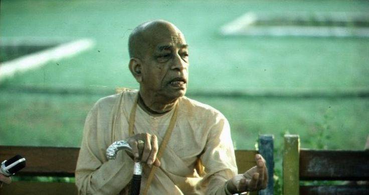

"Do what the Spiritual master wants"
Posted on : 23rd December, 2024

Some of the senior disciples told panchadravida that they never heard Srila Prabhupada speak quite like that, sanctioning whatever his disciples had asked for. But Panchadravida was not satisfied.
The following day he happened to be outside of prabhupad's room just as Prabhupada was looping his brahmanical thread around his ear in preparation for entering the bathroom. Seeing his spiritual master pancadravida spoke his mind again.
"Srila prabhupada, you know yesterday I asked you all those things, play music, live as a bramhacari outside the temple, or get married? So, I am little confused. I was wondering, if I do those things, will I have your blessings?"
Prabhupada cast a penetrating glance into his disciple's eyes and replied, "Why are you asking so many stupid questions? If you do not know what the spiritual master wants, how do you expect to have his blessings?" Srila Prabhupada then walked away and entered his bathroom. Pancadravida was left with his first lesson of spiritual life: Do what the Spiritual master wants. and he also better appreciated, by the way Srila Prabhupada was dealing with him, that Prabhupada was Transendental, not an ordinary being of this world.
Ref ~ Prabhupād Nectar, 28.